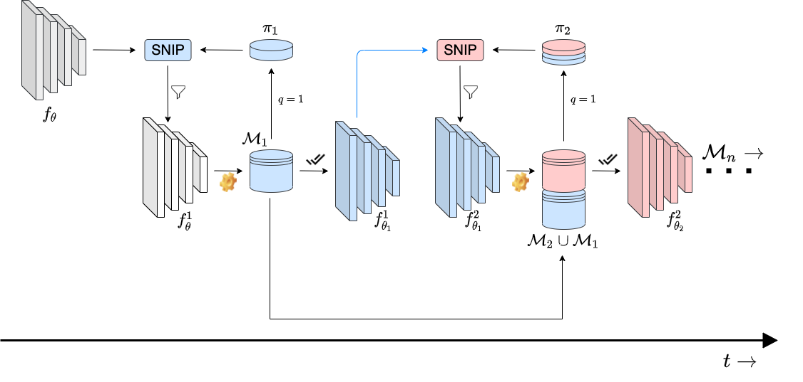

|

kai@asdneat.ldpiaang
 |
Mish: A Self Regularized Non-Monotonic Neural Activation Function
Diganta Misra
BMVC, 2020
project /
paper /
abstract /
bibtex
We propose Mish, a novel self-regularized non-monotonic activation function which can be mathematically defined as: $f(x)=xtanh(softplus(x))$. As activation functions play a crucial role in the performance and training dynamics in neural networks, we validated experimentally on several well-known benchmarks against the best combinations of architectures and activation functions. We also observe that data augmentation techniques have a favorable effect on benchmarks like ImageNet-1k and MS-COCO across multiple architectures. For example, Mish outperformed Leaky ReLU on YOLOv4 with a CSP-DarkNet-53 backbone on average precision ($AP^{val}_{50}$) by $2.1\%$ in MS-COCO object detection and ReLU on ResNet-50 on ImageNet-1k in Top-1 accuracy by $\approx 1 \%$ while keeping all other network parameters and hyperparameters constant. Furthermore, we explore the mathematical formulation of Mish in relation with the Swish family of functions and propose an intuitive understanding on how the first derivative behavior may be acting as a regularizer helping the optimization of deep neural networks.
@article{misra2019mish,
title={Mish: A self regularized non-monotonic neural activation function},
author={Misra, Diganta},
journal={arXiv preprint arXiv:1908.08681},
volume={4},
pages={2},
year={2019},
publisher={CoRR}
}
CV Talk Episode /
ML Cafe Episode /
Sicara Talk /
W&B Salon Episode


![](https://img.shields.io/badge/Dashboard-WandB?style=flat&color=black&logo=)

For those who are curious, the name Mish was coined by my girlfriend. üë©‚Äçüíª
|
 |
Rotate to Attend: Convolutional Triplet Attention Module
Diganta Misra*,
Trikay Nalamada*,
Ajay Uppili Arasanipalai*,
Qibin Hou
WACV, 2021
project /
paper /
supplementary /
video /
abstract /
bibtex
Benefiting from the capability of building interdependencies among channels or spatial locations, attention mechanisms have been extensively studied and broadly
used in a variety of computer vision tasks recently. In
this paper, we investigate light-weight but effective attention mechanisms and present triplet attention, a novel
method for computing attention weights by capturing cross-dimension interaction using a three-branch structure. For
an input tensor, triplet attention builds inter-dimensional
dependencies by the rotation operation followed by residual transformations and encodes inter-channel and spatial
information with negligible computational overhead. Our
method is simple as well as efficient and can be easily
plugged into classic backbone networks as an add-on module. We demonstrate the effectiveness of our method on
various challenging tasks including image classification on
ImageNet-1k and object detection on MSCOCO and PASCAL VOC datasets. Furthermore, we provide extensive insight into the performance of triplet attention by visually
inspecting the GradCAM and GradCAM++ results. The
empirical evaluation of our method supports our intuition
on the importance of capturing dependencies across dimensions when computing attention weights.
@inproceedings{misra2021rotate,
title={Rotate to attend: Convolutional triplet attention module},
author={Misra, Diganta and Nalamada, Trikay and Arasanipalai, Ajay Uppili and Hou, Qibin},
booktitle={Proceedings of the IEEE/CVF Winter Conference on Applications of Computer Vision},
pages={3139--3148},
year={2021}
}


|
 |
APP: Anytime Progressive Pruning New!
Diganta Misra*,
Bharat Runwal*,
Tianlong Chen,
Zhangyang Wang,
Irina Rish
DyNN workshop at ICML,2022
SNN, 2022
CLL workshop at ACML, 2022
SlowDNN workshop, 2023
project /
paper /
webpage /
abstract /
bibtex
With the latest advances in deep learning, there has been a lot of focus on the online learning paradigm due to its relevance in practical settings. Although many methods have been investigated for optimal learning settings in scenarios where the data stream is continuous over time, sparse networks training in such settings have often been overlooked. In this paper, we explore the problem of training a neural network with a target sparsity in a particular case of online learning: the anytime learning at macroscale paradigm (ALMA). We propose a novel way of progressive pruning, referred to as \textit{Anytime Progressive Pruning} (APP); the proposed approach significantly outperforms the baseline dense and Anytime OSP models across multiple architectures and datasets under short, moderate, and long-sequence training. Our method, for example, shows an improvement in accuracy of $\approx 7\%$ and a reduction in the generalization gap by $\approx 22\%$, while being $\approx 1/3$ rd the size of the dense baseline model in few-shot restricted imagenet training. We further observe interesting nonmonotonic transitions in the generalization gap in the high number of megabatches-based ALMA. The code and experiment dashboards can be accessed at \url{https://github.com/landskape-ai/Progressive-Pruning} and \url{https://wandb.ai/landskape/APP}, respectively.
@misc{misra2022app,
title={APP: Anytime Progressive Pruning},
author={Diganta Misra and Bharat Runwal and Tianlong Chen and Zhangyang Wang and Irina Rish},
year={2022},
eprint={2204.01640},
archivePrefix={arXiv},
primaryClass={cs.LG}
}
NSL presentation /
MLC Research Jam #8 /
MLC Research Jam #9 /
Continual AI Seminar


|
 |
Scaling the Number of Tasks in Continual Learning New!
Timothée Lesort,
Oleksiy Ostapenko,
Diganta Misra,
Md Rifat Arefin,
Pau Rodriguez,
Laurent Charlin,
Irina Rish
CoLLAs workshop, 2022
paper /
abstract /
bibtex
Standard gradient descent algorithms applied to sequences of tasks are known to produce catastrophic forgetting in deep neural networks. When trained on a new task in a sequence, the model updates its parameters on the current task, forgetting past knowledge. This article explores scenarios where we scale the number of tasks in a finite environment. Those scenarios are composed of a long sequence of tasks with reoccurring data. We show that in such setting, stochastic gradient descent can learn, progress, and converge to a solution that according to existing literature needs a continual learning algorithm. In other words, we show that the model performs knowledge retention and accumulation without specific memorization mechanisms. We propose a new experimentation framework, SCoLe (Scaling Continual Learning), to study the knowledge retention and accumulation of algorithms in potentially infinite sequences of tasks. To explore this setting, we performed a large number of experiments on sequences of 1,000 tasks to better understand this new family of settings. We also propose a slight modifications to the vanilla stochastic gradient descent to facilitate continual learning in this setting. The SCoLe framework represents a good simulation of practical training environments with reoccurring situations and allows the study of convergence behavior in long sequences. Our experiments show that previous results on short scenarios cannot always be extrapolated to longer scenarios.
@article{lesort2022scaling,
title = {Scaling the Number of Tasks in Continual Learning},
author = {Timothée Lesort and Oleksiy Ostapenko and Diganta Misra and Md Rifat Arefin and Pau Rodríguez and Laurent Charlin and Irina Rish},
year = {2022},
journal = {arXiv preprint arXiv: Arxiv-2207.04543}
}
|
 |
Beyond the Imitation Game: Quantifying and extrapolating the capabilities of language models New!
Diganta Misra,
Mukund Varma T.,
Multiple authors
Preprint, 2022
project /
paper /
abstract /
bibtex
Language models demonstrate both quantitative improvement and new qualitative capabilities with increasing scale. Despite their potentially transformative impact, these new capabilities are as yet poorly characterized. In order to inform future research, prepare for disruptive new model capabilities, and ameliorate socially harmful effects, it is vital that we understand the present and near-future capabilities and limitations of language models. To address this challenge, we introduce the Beyond the Imitation Game benchmark (BIG-bench). BIG-bench currently consists of 204 tasks, contributed by 442 authors across 132 institutions. Task topics are diverse, drawing problems from linguistics, childhood development, math, common-sense reasoning, biology, physics, social bias, software development, and beyond. BIG-bench focuses on tasks that are believed to be beyond the capabilities of current language models. We evaluate the behavior of OpenAI's GPT models, Google-internal dense transformer architectures, and Switch-style sparse transformers on BIG-bench, across model sizes spanning millions to hundreds of billions of parameters. In addition, a team of human expert raters performed all tasks in order to provide a strong baseline. Findings include: model performance and calibration both improve with scale, but are poor in absolute terms (and when compared with rater performance); performance is remarkably similar across model classes, though with benefits from sparsity; tasks that improve gradually and predictably commonly involve a large knowledge or memorization component, whereas tasks that exhibit "breakthrough" behavior at a critical scale often involve multiple steps or components, or brittle metrics; social bias typically increases with scale in settings with ambiguous context, but this can be improved with prompting.
@article{srivastava2022beyond,
title = {Beyond the Imitation Game: Quantifying and extrapolating the capabilities of language models},
author = {Aarohi Srivastava and Abhinav Rastogi and Abhishek Rao and Abu Awal Md Shoeb and Abubakar Abid and Adam Fisch and Adam R. Brown and Adam Santoro and Aditya Gupta and Adrià Garriga-Alonso and Agnieszka Kluska and Aitor Lewkowycz and Akshat Agarwal and Alethea Power and Alex Ray and Alex Warstadt and Alexander W. Kocurek and Ali Safaya and Ali Tazarv and Alice Xiang and Alicia Parrish and Allen Nie and Aman Hussain and Amanda Askell and Amanda Dsouza and Ameet Rahane and Anantharaman S. Iyer and Anders Andreassen and Andrea Santilli and Andreas Stuhlmüller and Andrew Dai and Andrew La and Andrew Lampinen and Andy Zou and Angela Jiang and Angelica Chen and Anh Vuong and Animesh Gupta and Anna Gottardi and Antonio Norelli and Anu Venkatesh and Arash Gholamidavoodi and Arfa Tabassum and Arul Menezes and Arun Kirubarajan and Asher Mullokandov and Ashish Sabharwal and Austin Herrick and Avia Efrat and Aykut Erdem and Ayla Karakaş and B. Ryan Roberts and Bao Sheng Loe and Barret Zoph and Bartłomiej Bojanowski and Batuhan Özyurt and Behnam Hedayatnia and Behnam Neyshabur and Benjamin Inden and Benno Stein and Berk Ekmekci and Bill Yuchen Lin and Blake Howald and Cameron Diao and Cameron Dour and Catherine Stinson and Cedrick Argueta and César Ferri Ramírez and Chandan Singh and Charles Rathkopf and Chenlin Meng and Chitta Baral and Chiyu Wu and Chris Callison-Burch and Chris Waites and Christian Voigt and Christopher D. Manning and Christopher Potts and Cindy Ramirez and Clara E. Rivera and Clemencia Siro and Colin Raffel and Courtney Ashcraft and Cristina Garbacea and Damien Sileo and Dan Garrette and Dan Hendrycks and Dan Kilman and Dan Roth and Daniel Freeman and Daniel Khashabi and Daniel Levy and Daniel Moseguí González and Danny Hernandez and Danqi Chen and Daphne Ippolito and Dar Gilboa and David Dohan and David Drakard and David Jurgens and Debajyoti Datta and Deep Ganguli and Denis Emelin and Denis Kleyko and Deniz Yuret and Derek Chen and Derek Tam and Dieuwke Hupkes and Diganta Misra and Dilyar Buzan and Dimitri Coelho Mollo and Diyi Yang and Dong-Ho Lee and Ekaterina Shutova and Ekin Dogus Cubuk and Elad Segal and Eleanor Hagerman and Elizabeth Barnes and Elizabeth Donoway and Ellie Pavlick and Emanuele Rodola and Emma Lam and Eric Chu and Eric Tang and Erkut Erdem and Ernie Chang and Ethan A. Chi and Ethan Dyer and Ethan Jerzak and Ethan Kim and Eunice Engefu Manyasi and Evgenii Zheltonozhskii and Fanyue Xia and Fatemeh Siar and Fernando Martínez-Plumed and Francesca Happé and Francois Chollet and Frieda Rong and Gaurav Mishra and Genta Indra Winata and Gerard de Melo and Germán Kruszewski and Giambattista Parascandolo and Giorgio Mariani and Gloria Wang and Gonzalo Jaimovitch-López and Gregor Betz and Guy Gur-Ari and Hana Galijasevic and Hannah Kim and Hannah Rashkin and Hannaneh Hajishirzi and Harsh Mehta and Hayden Bogar and Henry Shevlin and Hinrich Schütze and Hiromu Yakura and Hongming Zhang and Hugh Mee Wong and Ian Ng and Isaac Noble and Jaap Jumelet and Jack Geissinger and Jackson Kernion and Jacob Hilton and Jaehoon Lee and Jaime Fernández Fisac and James B. Simon and James Koppel and James Zheng and James Zou and Jan Kocoń and Jana Thompson and Jared Kaplan and Jarema Radom and Jascha Sohl-Dickstein and Jason Phang and Jason Wei and Jason Yosinski and Jekaterina Novikova and Jelle Bosscher and Jennifer Marsh and Jeremy Kim and Jeroen Taal and Jesse Engel and Jesujoba Alabi and Jiacheng Xu and Jiaming Song and Jillian Tang and Joan Waweru and John Burden and John Miller and John U. Balis and Jonathan Berant and Jörg Frohberg and Jos Rozen and Jose Hernandez-Orallo and Joseph Boudeman and Joseph Jones and Joshua B. Tenenbaum and Joshua S. Rule and Joyce Chua and Kamil Kanclerz and Karen Livescu and Karl Krauth and Karthik Gopalakrishnan and Katerina Ignatyeva and Katja Markert and Kaustubh D. Dhole and Kevin Gimpel and Kevin Omondi and Kory Mathewson and Kristen Chiafullo and Ksenia Shkaruta and Kumar Shridhar and Kyle McDonell and Kyle Richardson and Laria Reynolds and Leo Gao and Li Zhang and Liam Dugan and Lianhui Qin and Lidia Contreras-Ochando and Louis-Philippe Morency and Luca Moschella and Lucas Lam and Lucy Noble and Ludwig Schmidt and Luheng He and Luis Oliveros Colón and Luke Metz and Lütfi Kerem Şenel and Maarten Bosma and Maarten Sap and Maartje ter Hoeve and Madotto Andrea and Maheen Farooqi and Manaal Faruqui and Mantas Mazeika and Marco Baturan and Marco Marelli and Marco Maru and Maria Jose Ramírez Quintana and Marie Tolkiehn and Mario Giulianelli and Martha Lewis and Martin Potthast and Matthew L. Leavitt and Matthias Hagen and Mátyás Schubert and Medina Orduna Baitemirova and Melody Arnaud and Melvin McElrath and Michael A. Yee and Michael Cohen and Michael Gu and Michael Ivanitskiy and Michael Starritt and Michael Strube and Michał Swędrowski and Michele Bevilacqua and Michihiro Yasunaga and Mihir Kale and Mike Cain and Mimee Xu and Mirac Suzgun and Mo Tiwari and Mohit Bansal and Moin Aminnaseri and Mor Geva and Mozhdeh Gheini and Mukund Varma T and Nanyun Peng and Nathan Chi and Nayeon Lee and Neta Gur-Ari Krakover and Nicholas Cameron and Nicholas Roberts and Nick Doiron and Nikita Nangia and Niklas Deckers and Niklas Muennighoff and Nitish Shirish Keskar and Niveditha S. Iyer and Noah Constant and Noah Fiedel and Nuan Wen and Oliver Zhang and Omar Agha and Omar Elbaghdadi and Omer Levy and Owain Evans and Pablo Antonio Moreno Casares and Parth Doshi and Pascale Fung and Paul Pu Liang and Paul Vicol and Pegah Alipoormolabashi and Peiyuan Liao and Percy Liang and Peter Chang and Peter Eckersley and Phu Mon Htut and Pinyu Hwang and Piotr Miłkowski and Piyush Patil and Pouya Pezeshkpour and Priti Oli and Qiaozhu Mei and Qing Lyu and Qinlang Chen and Rabin Banjade and Rachel Etta Rudolph and Raefer Gabriel and Rahel Habacker and Ramón Risco Delgado and Raphaël Millière and Rhythm Garg and Richard Barnes and Rif A. Saurous and Riku Arakawa and Robbe Raymaekers and Robert Frank and Rohan Sikand and Roman Novak and Roman Sitelew and Ronan LeBras and Rosanne Liu and Rowan Jacobs and Rui Zhang and Ruslan Salakhutdinov and Ryan Chi and Ryan Lee and Ryan Stovall and Ryan Teehan and Rylan Yang and Sahib Singh and Saif M. Mohammad and Sajant Anand and Sam Dillavou and Sam Shleifer and Sam Wiseman and Samuel Gruetter and Samuel R. Bowman and Samuel S. Schoenholz and Sanghyun Han and Sanjeev Kwatra and Sarah A. Rous and Sarik Ghazarian and Sayan Ghosh and Sean Casey and Sebastian Bischoff and Sebastian Gehrmann and Sebastian Schuster and Sepideh Sadeghi and Shadi Hamdan and Sharon Zhou and Shashank Srivastava and Sherry Shi and Shikhar Singh and Shima Asaadi and Shixiang Shane Gu and Shubh Pachchigar and Shubham Toshniwal and Shyam Upadhyay and Shyamolima and Debnath and Siamak Shakeri and Simon Thormeyer and Simone Melzi and Siva Reddy and Sneha Priscilla Makini and Soo-Hwan Lee and Spencer Torene and Sriharsha Hatwar and Stanislas Dehaene and Stefan Divic and Stefano Ermon and Stella Biderman and Stephanie Lin and Stephen Prasad and Steven T. Piantadosi and Stuart M. Shieber and Summer Misherghi and Svetlana Kiritchenko and Swaroop Mishra and Tal Linzen and Tal Schuster and Tao Li and Tao Yu and Tariq Ali and Tatsu Hashimoto and Te-Lin Wu and Théo Desbordes and Theodore Rothschild and Thomas Phan and Tianle Wang and Tiberius Nkinyili and Timo Schick and Timofei Kornev and Timothy Telleen-Lawton and Titus Tunduny and Tobias Gerstenberg and Trenton Chang and Trishala Neeraj and Tushar Khot and Tyler Shultz and Uri Shaham and Vedant Misra and Vera Demberg and Victoria Nyamai and Vikas Raunak and Vinay Ramasesh and Vinay Uday Prabhu and Vishakh Padmakumar and Vivek Srikumar and William Fedus and William Saunders and William Zhang and Wout Vossen and Xiang Ren and Xiaoyu Tong and Xinyi Wu and Xudong Shen and Yadollah Yaghoobzadeh and Yair Lakretz and Yangqiu Song and Yasaman Bahri and Yejin Choi and Yichi Yang and Yiding Hao and Yifu Chen and Yonatan Belinkov and Yu Hou and Yufang Hou and Yuntao Bai and Zachary Seid and Zhao Xinran and Zhuoye Zhao and Zijian Wang and Zijie J. Wang and Zirui Wang and Ziyi Wu},
year = {2022},
journal = {arXiv preprint arXiv: Arxiv-2206.04615}
}
Tense task


|
|
Genetic Algorithm Optimized Inkjet Printed Electromagnetic Absorber on Paper Substrate
Diganta Misra,
Rahul Pelluri,
Vijay Kumar Verma,
Bhargav Appasani,
Nisha Gupta
IEEE AESPC, 2018
paper /
abstract /
bibtex
Printable electronics based electromagnetic absorbers are receiving increasing attention of the electromagnetic community because of their unprecedented advantages. This paper presents the design of printable electromagnetic absorbers for the X band. The design of the absorber is optimized using the Genetic Algorithm (GA) to enhance the absorptivity and the absorption bandwidth. The design involves the placement of several square-shaped conductive ink at optimal locations on the paper substrate such that desired absorption characteristics are obtained. Simulations are carried out using the HFSS simulation software. The optimized structure offers an absorptivity of more than 90% in the X band thereby proving to be a viable solution for stealth applications.
@inproceedings{misra2018genetic,
title={Genetic Algorithm Optimized Inkjet Printed Electromagnetic Absorber on Paper Substrate},
author={Misra, Diganta and Pelluri, Rahul and Verma, Vijay Kumar and Appasani, Bhargav and Gupta, Nisha},
booktitle={2018 International Conference on Applied Electromagnetics, Signal Processing and Communication (AESPC)},
volume={1},
pages={1--3},
year={2018},
organization={IEEE}
}

|
|
Convoluted Cosmos: Classifying Galaxy Images Using Deep Learning
Diganta Misra,
Sachi Nandan Mohanty,
Mohit Agarwal,
Suneet K Gupta
Springer ICDMAI, 2019 (Proceedings of the AISC)
paper /
abstract /
bibtex
In this paper, a deep learning-based approach has been developed to classify the images of galaxies into three major categories, namely, elliptical, spiral, and irregular. The classifier successfully classified the images with an accuracy of 97.3958%, which outperformed conventional classifiers like Support Vector Machine and Naive Bayes. The convolutional neural network architecture involves one input convolution layer having 16 filters, followed by 4 hidden layers, 1 penultimate dense layer, and an output Softmax layer. The model was trained on 4614 images for 200 epochs using NVIDIA-DGX-1 Tesla-V100 Supercomputer machine and was subsequently tested on new images to evaluate its robustness and accuracy.
@incollection{misra2020convoluted,
title={Convoluted cosmos: classifying galaxy images using deep learning},
author={Misra, Diganta and Mohanty, Sachi Nandan and Agarwal, Mohit and Gupta, Suneet K},
booktitle={Data Management, Analytics and Innovation},
pages={569--579},
year={2020},
publisher={Springer}
}

|
|
Research under progress/ under review
|
|
SPADE
Diganta Misra,
Bharat Runwal (Landskape AI),
Gintare Karolina Dziugaite (Google Brain)
|
|
Understanding effective robustness of Visual Language Models
Diganta Misra,
Yao Qin (Google Research, UCSB)
|
|
Minimal exit depth as a proxy for estimating miscalibration of neural networks.
Bharat Runwal (Landskape AI),
Diganta Misra
|
|
Continual Reprogramming: Forgetting exempt continual learning with a dictionary of reprogrammers
Pin Yu Chen (IBM),
Diganta Misra,
Bharat Runwal (Landskape AI),
Irina Rish (Mila, CERC)
|
|
VQA Reprogramming
Jay Gala (AI4Bharat @ IIT Madras),
Victor Zhu (UCSD),
Diganta Misra
|
|
Open Source Frameworks & Projects
Sponsor
|
Internships and Exchange Programs
|
Data Science InternJun. 2018 - Feb. 2019
CSIR-CDRI
During this internship, I was involved in building the analytical pipeline, data collection, pre-processing of data, cleaning of data, Geo-spatial Analysis of data and Document writing for the project on understanding demographics of Venture Capital and
Early Seed Investments. As a part of a team of three, I was advised and mentored by Dr. Sukant Khurana.
Remote
|
|
Summer InternMay. 2018 - Jun. 2018
IIT-Kharagpur
Studied basic algorithmic techniques using functional programming languages - Lisp
and Prolog under the guidance of Assc. Prof. Pawan Kumar.
Kharagpur, India
|
|
Summer Exchange InternJun. 2017 - Aug. 2017
Bangkok University
Served as a primary instructor for cultural engagements along with teaching basic
english and computer science to primary grade students at RangsonWittaya School,
Nakhon Sawan under the AIESEC SDG #4 programme. Was also part of culture
exchange, entrepreneurship and social service programs at Bangkok University
Bangkok, Thailand
|
|
Initiatives and Academic Services
|
 |
NeuroMatch Academy
I am responsible for developing the content for the Strategies section in the Continual Learning lecture of the Deep Learning Cohort of Neuromatch Academy 2021.
|
 |
W&B ML Reproducibility Challenge
I am the lead organizer of the W&B MLRC 2021 where I actively support our challenge participants. Our mission of organizing this challenge is
to make machine learning research reproducible, transparent and accessible to everyone. This initiative is also supported by our W&B MLRC Grant of $500 for each participant.
|
 |
INF8225: Probabilistic Learning
I am a teaching assistant for the INF8225: Probabilistic Learning at Polytechnique University taught by Christopher J. Pal for the Winter 2022 semester.
|
 |
Deep Learning Theory Reading Group, MILA
I am an organizer of the DL Theory Reading Group at MILA, Montreal.
|
|
MILA 2022 Entrepreneurs Cohort Program
I was selected as one of the entrepreneurs in residence and pitched my startup idea called 9CLEF (Elevator Pitch).
|
 |
Served as a Program Committee member for:
Conference on Lifelong Learning Agents(CoLLA) 2022
|
 |
Quebec Ministry of Higher Education International Students Scholarship
2022
I was awarded the DIRO x Quebec Ministry of Higher Education international students scholarship worth CAD$4,000 for the academic year 2022.
|
 |
UNIQUE AI Excellence Scholarship
2022
I was awarded the UNIQUE AI Excellence Scholarship worth CAD$10,000 for the academic year 2022. Under this scholarship, I will be working with Irina Rish and Pouya Bashivan on dynamic sparsity based research.
|
 |
PaperswithCode Top Contributor award
2022
I was awarded the PaperswithCode Top Contributor award for the academic year 2022.
|
|
MILA Entrepreneurs Grant
2022
I was awarded the MILA Entrepreneurs Grant worth CAD$5,000 to pursue my startup venture 9CLEF (Elevator Pitch) and build an early prototype.
|
 |
AMII AI Week Travel Bursary
2022
I was awarded the AMII AI Week 2022 Student Travel Bursary worth CAD$1,500.
|
Updated on: 22nd November, 2022
Merci, Jon Barron!
|
| |